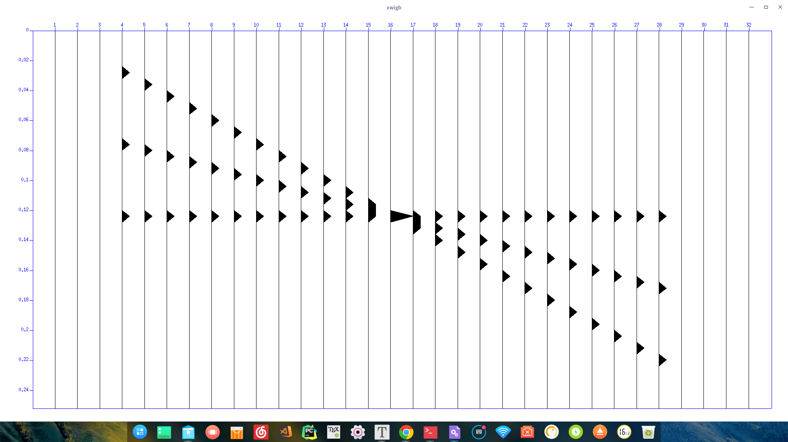

地震勘探软件CWPSU的安装
大家好，最近实习需要用到CWPSU软件，就捣鼓了一下，网上有一些安装教程，不过大多不全，有的甚至还是错误的，今天就给大家好好梳理一下，顺便给WSL下的安装开一个路。
建立目录
在/home/user下建立目录，例如cwpsu（其中user 为你LInux的用户名，例如zhangsan就是/home/zhangsan）
1 | mkdir cwpsu |
解压
1 | tar -xvf filename.tar -Cyourdir |
配置环境变量
在同样/home/user下输入
1 | vim .bashrc |
在最后加入两行
1 | export CWPROOT=/home/user/su |
然后更新bashrc或bash_profile（zsh同理，博主就是用的zsh）
1 | source .bashrc |
1 | source .bash_profile |
1 | source .zshrc |
依据自己情况选择
值得注意的是有些Linux没有.bash_profile这个文件，可以看有没有.profile等之类的相似的文件。是一样的效果。例如博主的WSL里就是.profile所以第二行替换为
1 | source .profile |
完成之后
可以输入
1 | echo $CWPROOT |
检测是否成功，若出现
1 | /home/user/su |
则说明成功了
配置安装文件
这一步基本没什么操作，默认编译CC=gcc FC=gfortran都是用的最广的
只需要在makefile文件里将
1 | #CWPROOT= |
改成
1 | CWPROOT=/home/user/su |
安装
直接
1 | make install |
开始安装CWP主程序
不过弹出一堆warning,眼睛都要花了。。。可以在zsh或是bash里调一下报错等级，不过问题不大。
到这里只是安装了CWP主程序，其他的还都没有安装，如果这时你去测试网上抄来抄去的博客中的代码
1 | suplane |suxwigb & |
的话，那么只会报错如下
1 | xwigb not found |
等一系列错误，我们需要继续安装其他程序。
不过在此之前你需要安装一系列包，不然就会报错
所以建议把包装齐
1 | sudo apt install libx11-dev libc6 freeglut3-dev libxt6 x11proto-print-dev libmotif-dev libxi-dev libxmu-dev |
freeglut3-dev管mglinstall
libmotif-dev管xminstall
1 | make xtinstall |
其中第二个是Fortran安装程序，有就不用装了，utils和sfintall不是必要的。
在安装完后我们输入
1 | suplane | suxwigb & |
出现一个窗口则代表成功了！
不过在这里插一段，博主在WSL里安装后会出现
1 | sh1:error:cannot connect to display! |
这个是由于WSL没有图形界面造成的，需要安装一个图形界面。至于这部分我会换到下一个博文里详细讲解，详情见此处。
博主重新回到Deepin里同样的安装步骤成功安装

关于使用方法，期待后续更新吧！
再会！
Comments